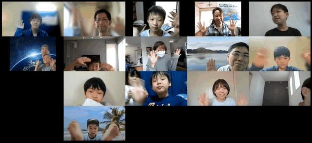

第21回 オンライン（2022年5月15日）
本日はレベルアップ講座パート２「迷路描画で逃走中😎」
「自動で迷路描画」の続編、「迷路で逃走中」でパワーアップしましょう！

今月の青梅Dojo出欠確認です
５月連休明けは念のためオンライン開催としました。ニンジャ10名、ユースメンター1名、そして「CoderDojoながと」から見学のいわDさん。メンターは5名。ここまで17名以上、他に保護者のみなさん。
今月のメンター紹介
CoderDojo青梅の会計を担当している「ヤマ」さんです。ヤマさんが高校生だった頃の音楽部コンクールや、大学生の頃の大きな荷物を背負って山登りしたワンダーフォーゲル部、そしてキャンプ場の管理人や旅館でのレンタルスキー貸出などのアルバイトについて話をしてくれました。CoderDojo青梅では会場準備やZoomブレークアウトルームなどのIT設備を用意してくれています。
CoderDojo青梅の特長
CoderDojo青梅では、事前にメンター勉強会を開催してニンジャより先に共通テーマに挑戦しています。だからメンターひとりずつ Zoomブレークアウトルームに分かれても皆で同じテーマで「自動で迷路作成」や「迷路で逃走中」など、共通のプログラミングをレクチャーすることができるのです。そう、じつはニンジャだけでなく、メンターもしっかりプログラミングを遊んで学んでいるわけです。
ワークショップ
前回のイベントで「自動で迷路描画」をやった人は、完成した迷路を使って『逃走中』のハンター役を作るなどレベルアップ講座パート２に挑戦！
- （初級）はゴールに着いたらド派手は演出するために「紙吹雪」を作成。
- （中級）は迷路の通路をランダムにさまようバグ（虫）を自動移動させる。
- （上級）は壁に沿って進むカニを「右手の法則」を使って移動させちゃう。
- （もっとできるひと）自分でネコキャラを操作してゴールを目指すゲームを完成させちゃおう
作品発表
最初に、今日つくった迷路と逃走中の成果を発表。続けて、おうちで作ったオリジナル作品の紹介。みんなの可愛らしく、初めてみた作品のアイディアに驚かされます。実際の作品を見てみたい人はCoderDojo青梅に行ってみよう。

本日の参加者
みんなー、楽しかったよー。またねー。
